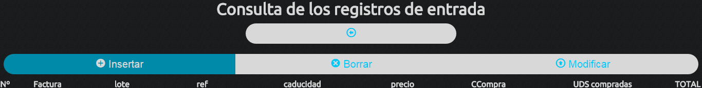
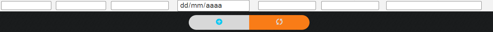

Esta aplicación es un administrador de una base de datos diseñada para la gestión de una empresa de servicios veterinarios. Está desarrollada por Ismael Milán Márquez. A continuación se detalla brevemente el funcionamiento de la aplicación PEA, para una información mas técnica lea el manual de la aplicación. Si desea alguna adaptación de la aplicación para sus necesidades contacte con el desarrollador o modifiquela usted mismo ya que está registrada bajo licencia GPL3.
Las consultas son muy similares en todas las páginas, por ello tomaremos como ejemplo la página entradas: 
En la imagen se pueden apreciar 4 partes claras: el título de la página, el botón de volver atrás, un conjunto de botones y el nombre de las columnas de las tablas. El conjunto de botones, es el selector de la operación a llevar a cabo, en la mayoría de las páginas es el mismo, tiene los iconos de:
: para insertar registros.
: para borrarlos.
: para modificarlos.
: para archivar las tareas pendeintes.
Seleccione el botón que desee y tendrá un formulario con el cual podrá llevar a cabo la operación deseada.

Despúes de llevar a cabo la operación deseada y debajo de la tabla, aparecen dos botones más. El primero, realiza la acción del formulario seleccionada anteriormente y el segundo vuelve a poner los valores por defecto en dicho formulario.